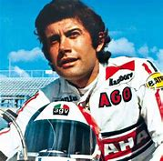
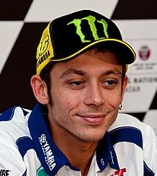
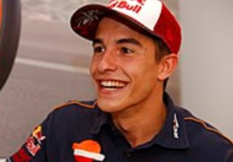

Giacomo Agostini was born 16 June 1942, he is an Italian multi-time world champion Grand Prix motorcycle road racer. Nicknamed Ago, with an absolute record of 122 Grand Prix wins and 15 World Championships titles. Of these, 68 wins and 8 titles came in the 500cc class, the rest in the 350cc class. For these insofar unparalleled achievements, obtained over the course of a career spanning 17 years, he is widely regarded as the most qualified competitor to the title of greatest Grand Prix rider of all times. THE GOAT
Valentino Rossi was born on 16 February 1979, he is an Italian professional motorcycle road racer and multiple MotoGP World Champion. Rossi is one of the most successful motorcycle racers of all time, with nine Grand Prix World Championships to his name - seven of which are in the premier class.
Marc Marquez was born on 17 February 1993, he is a Spanish Grand Prix motorcycle road racer and one of the most successful motorcycle racers of all time with seven Grand Prix world championships to his name - five of which are in the premier MotoGP class. Marquez races for Honda's factory team since his MotoGP debut in 2013.
